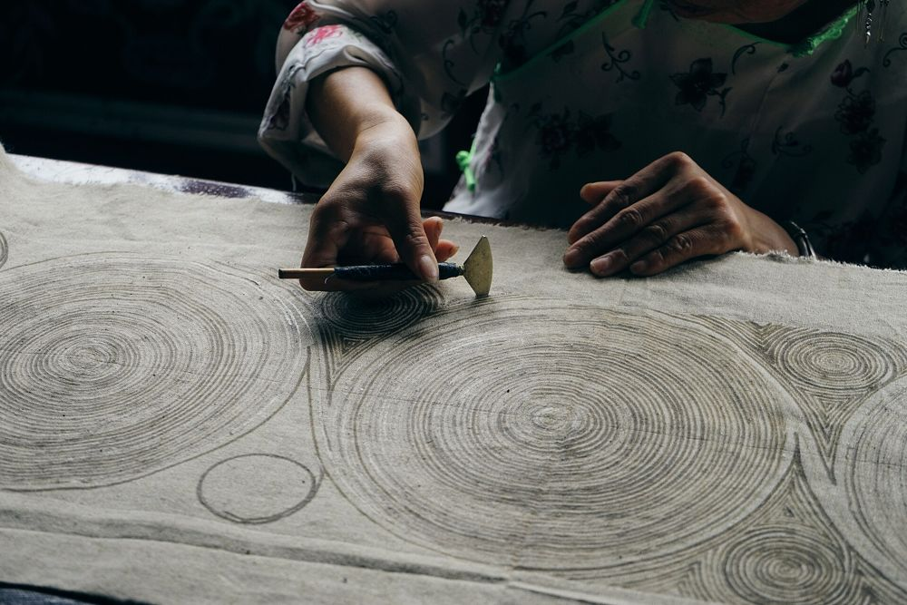

One Object, One Story
一物一故事

一把蜡刀，两代人的冰纹
A wax knife, two generations of ice patterns
"Grandmother says the wax must be hot enough to flow like a stream, but calm enough to listen. When it cracks in the dye vat, the cloth remembers — we call it ice, and ice becomes a flower."
在丹寨的染坊里，阿婆把蜂蜡在小铜锅里化开。蜡刀蘸蜡，在白布上走出线条 —— 画得再稳，浸进靛蓝染缸时总会裂开细纹。这不是失败，苗家人叫它「冰纹」：蜡裂开的地方，蓝色渗进去，开出一朵谁也预料不到的花。Rita 会带你用英语讲这段故事：蜡怎么化、布怎么染、花怎么开。
Tell it in three sentences
"Wax is drawn before dye ever touches the cloth."
"The cracks are not mistakes — they are ice patterns."
"Where the wax breaks, a flower of blue begins."